Merging seven form
builders into one
I was the only designer. I did the research, designed the new builder, and used what I learned to change the roadmap.
Keap had 7 form builders doing the same job, and no single team owned them. I argued for merging them into one builder on the existing backend instead of a 12+ month rebuild. So far, the first half of that one builder has shipped, plus AI that drafts a complete form from a prompt. 79% of about 100K form users created at least one form in the new builder within three months of launch.
Seven ways to build a form, and users still left
Four live builders and three legacy ones, each with its own UX, spread across four teams. Any improvement had to be built seven times, and no single team owned the whole problem, so I took it on.
Users couldn’t tell them apart
The names came from our product vocabulary, not theirs, so there was no obvious one to move to.
So they built forms elsewhere
Our survey found four other form tools people used instead, and a quarter named the same one.
One form got worse
Only one form hit its measured target, and the most used form scored lower after its rebuild than before.
The only designer on it
Pulled six years of research together
Five studies since 2020 had each sat in a folder. Side by side, they showed the problem was structural.
Ran new research
A survey of 25 people with two researchers, an audit of nine competitors, a prioritization workshop, and both usability studies.
Set the direction and the phases
Parity (matching every feature the old builders had before adding new ones) first, then consolidation, then appointments and payments. I got the team that owned checkout on board first.
Argued against the full rebuild
Engineering estimated a rebuild at twelve months or more. I showed the data models were sound and the fragmentation was in what users saw, so a rebuild meant regression risk for little payoff.
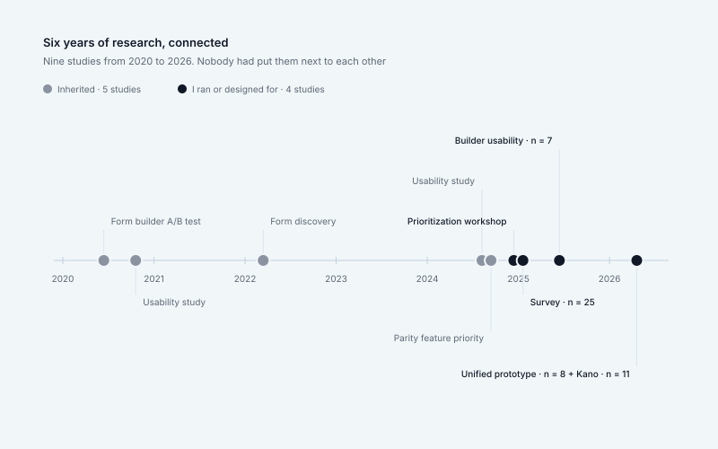
Ask what the form is for
One builder with four use cases replaces seven products, and the use case decides where the form can appear.
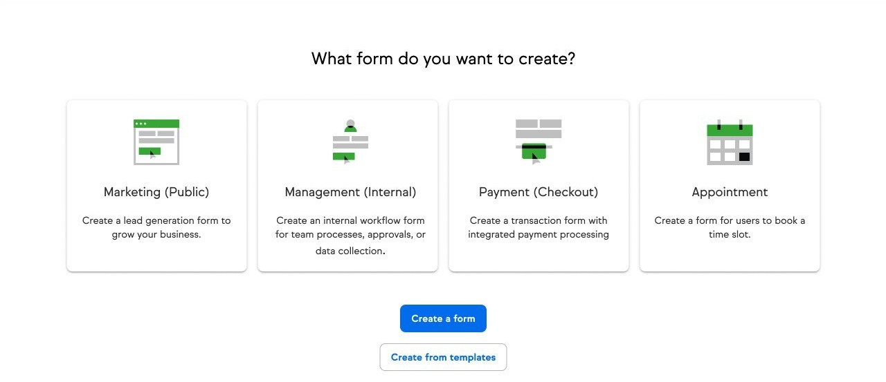
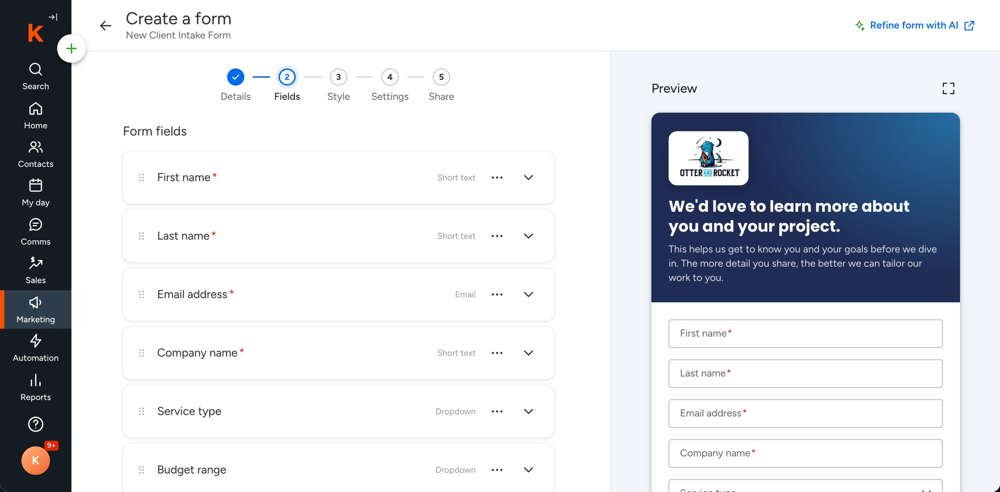
Round one went badly, and that was useful
Round one · 7 participants
None of the seven could add a step, and six got tripped up by the old categories. The live preview earned their trust.
Round two · 8 participants
A year later, manual creation scored a perfect 3.00 on the flow that broke for everyone, and most people didn’t notice the merge.
What still didn’t work
Finding Forms was the only real friction left. People looked in Automations, Contacts, Sales and Reporting first.
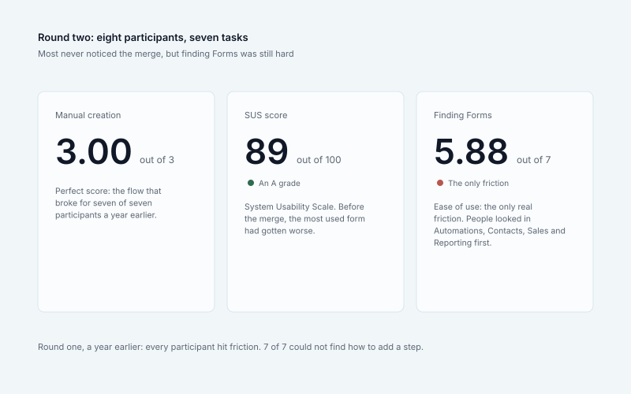
One builder made AI drafts possible
With one builder instead of seven, AI can produce a complete form that uses everything the builder supports.
Fields, copy, brand and template arrive together. Interactive prototype.
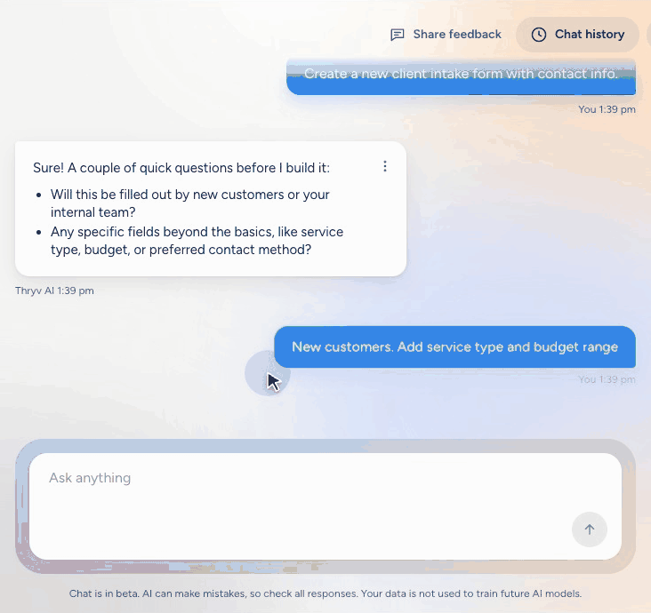
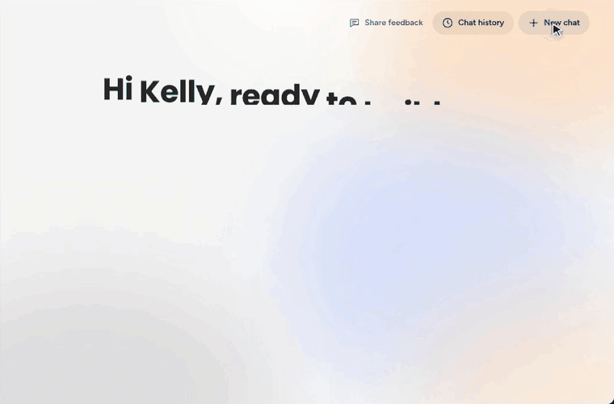
Nearly everyone tries AI once, so I added suggestion chips and templates so nobody starts from an empty prompt box.
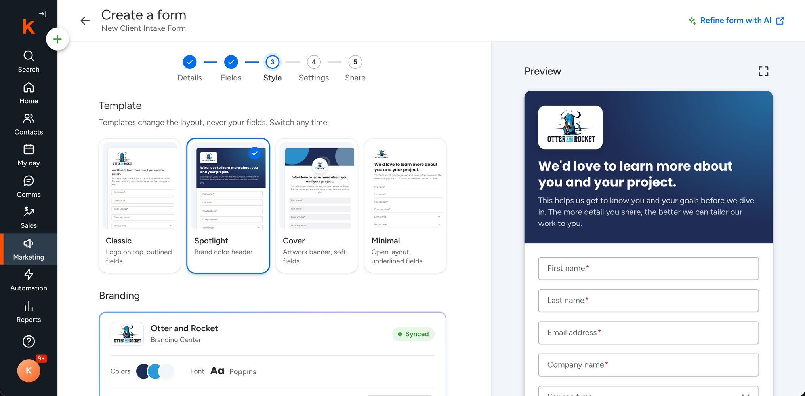
Built on a phone, filled on a phone
I designed both sides on a phone, the owner who makes the form and the customer who fills it out, with the same builder and Thryv AI as desktop.
Tap, don’t type
Answers you can tap, so a draft can come from two taps instead of a paragraph.
Fields sized for fingers
52 pixel fields with 16 pixel text, so iOS doesn’t zoom in. Submit stays pinned in reach.
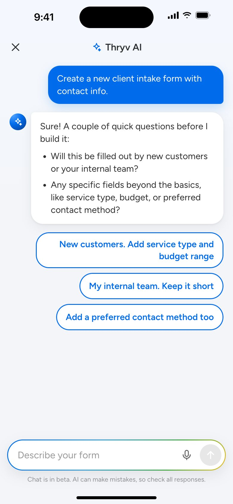
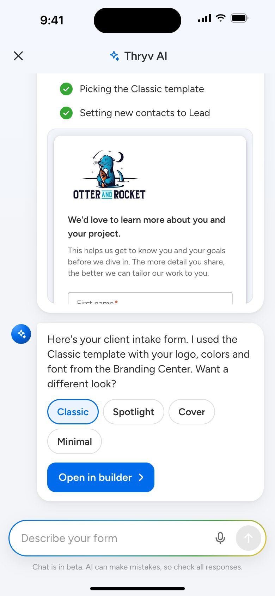
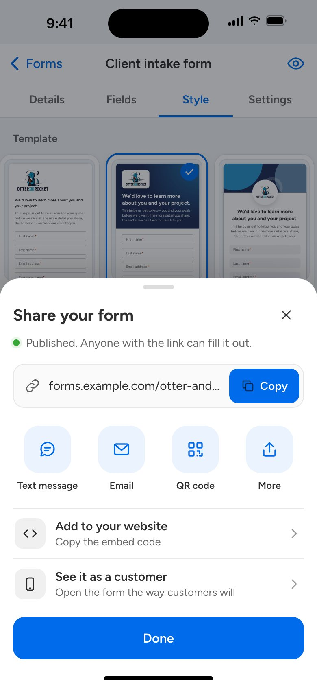
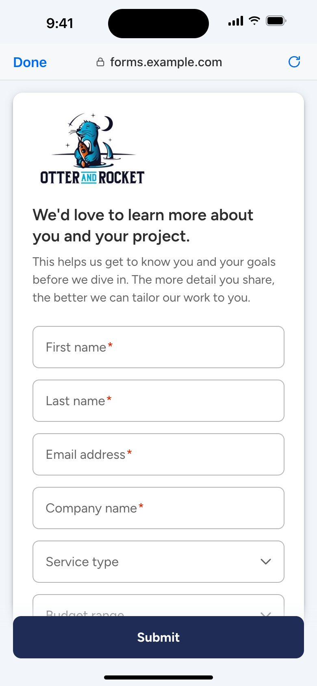
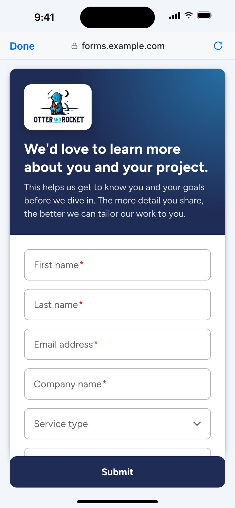
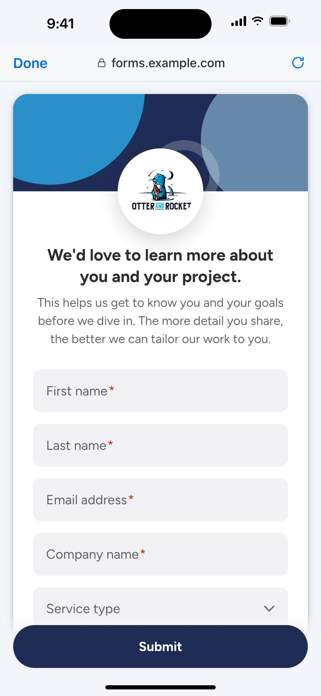
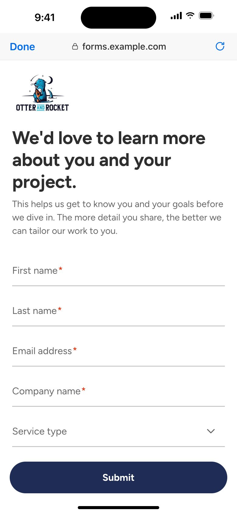
Where I changed direction
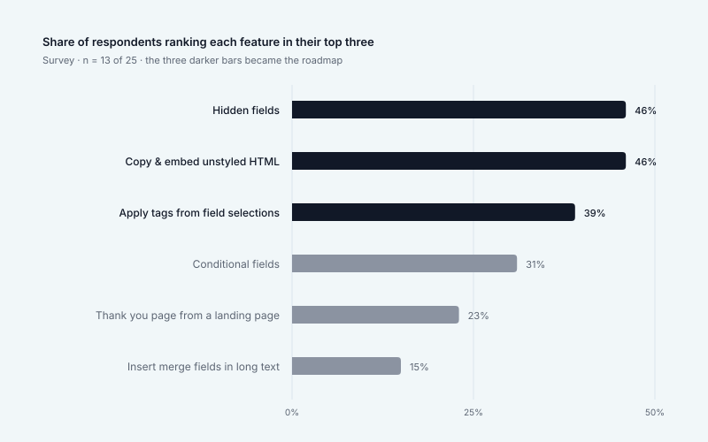
A Kano study (a survey method that sorts features by how much users notice their presence or absence) didn’t match our plan. Conditional logic ranked highest in both it and the survey, but wasn’t on the roadmap. I took that to leadership: conditional logic moved up, and the payments phase came out.
Who decided what
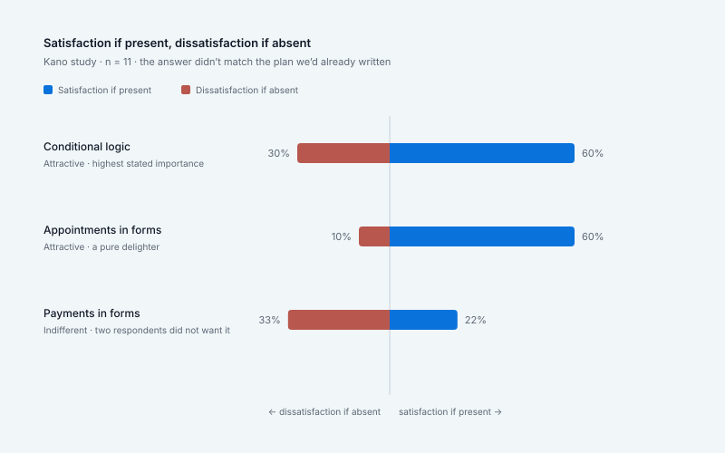
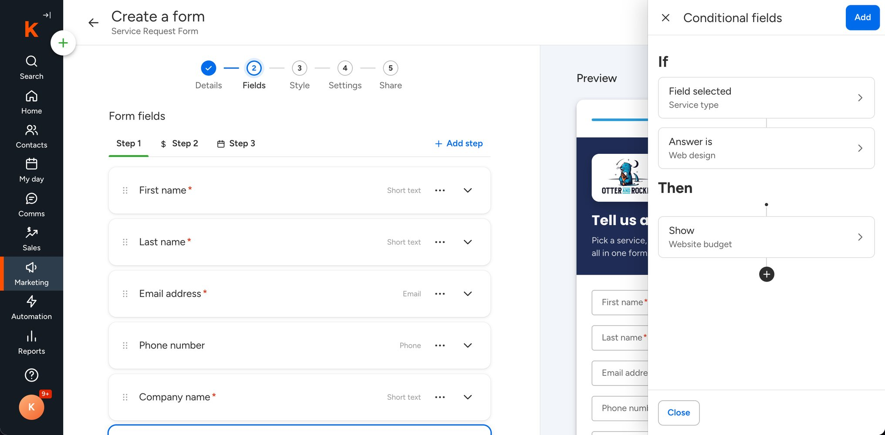
What shipped and what’s next
Once the form service is finished, one team can own it, and the tech debt of seven implementations goes away. Forms also work across the platform, with AI and MCP (Model Context Protocol, a standard way to let AI tools call the product’s functions) layers on top. It took four teams, two months of design research and six months of development. So far, 79% of about 100K form users created at least one form in the new builder within three months of launch, and support reported fewer form-builder tickets after launch.